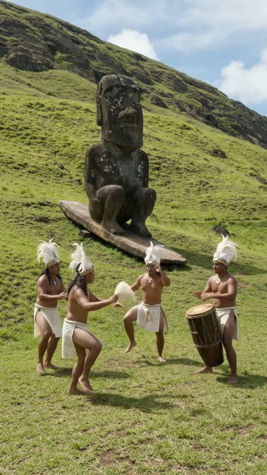
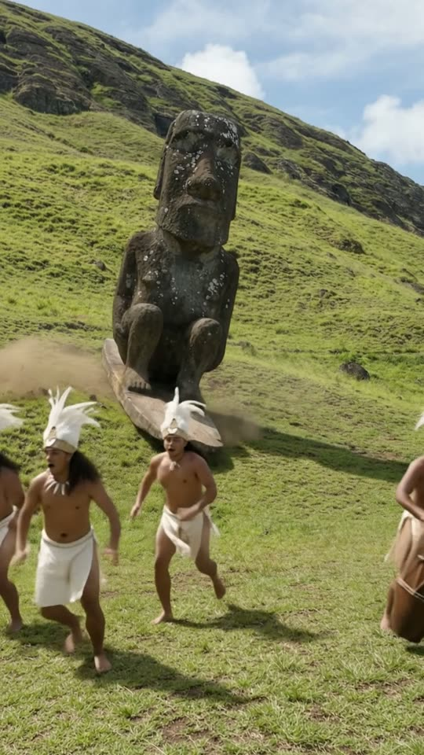
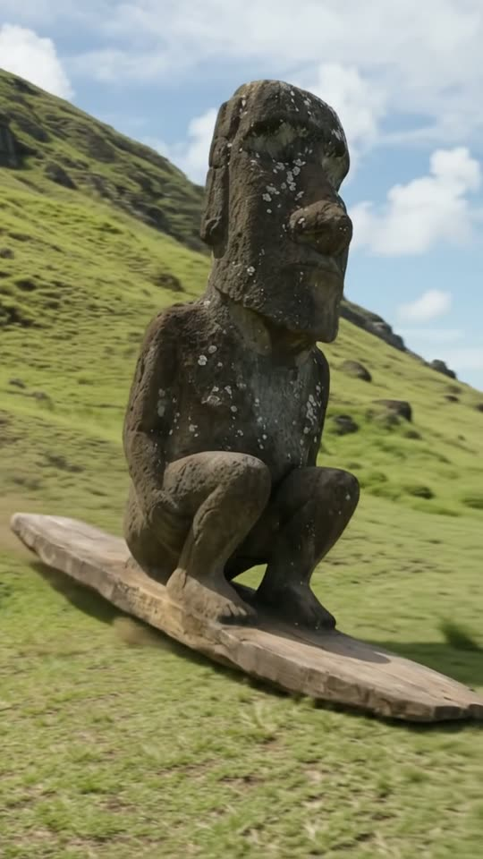
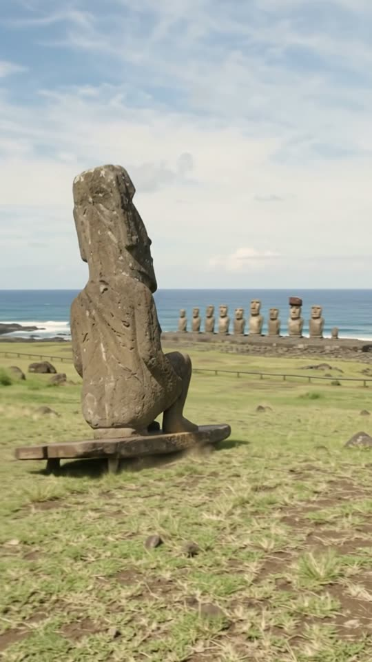

Free prompt pack
One moai.One board.
On Easter Island, a stone moai crouches on a wooden board halfway up a volcano, then surfs it down the grass past the dancers and away to the coast. One still image and one prompt, in one take.
Both prompts, in the order I ran them. Push the stone off each one. Tap the hill to beat the drum.
The first frame
Already on the board. This image is frame one: the moai crouched on its wooden board halfway up the slope, and four dancers with a drum on the grass in front.
Watch out
Describe the moai by what you see: dark volcanic rock, pits, pale lichen. Say how it's carved and you get a souvenir.

The prompt 123 words
Real photo at the foot of a steep green grassy volcano slope on Easter Island on a sunny afternoon. Halfway up the slope stands a tall moai: the classic carved head with a heavy brow, long nose, long ears and thin pressed lips, but with a full stone body, arms down at its sides and bent stone legs in a low surfer's crouch, all dark grey volcanic rock, pitted and weathered with pale lichen spots. It stands on a wide oval wooden board lying on the grass. In the foreground, four Rapa Nui men in tall white feather headdresses and white fibre skirts dance barefoot on the grass, one beating a large wooden drum. Blue sky with white clouds. Real photo, natural colour.
Down the hill
Ten seconds, one slope, one stone surfer. Add the image as the reference, set 10 s, 9:16, 720p and audio on, and paste the prompt whole.
- 0–2.0 sthe dancers keep the beat
- 2.0–3.5 sthe board tips over a bump
- 3.5–6.0 sit carves down, the dancers scatter
- 6.0–10 spast the camera, off to the coast
Watch out
Tell it how stone moves: stiff knees, dust at the joints, never bending like rubber. Left alone, the statue goes soft the moment it moves.
Fragments



The prompt 1032 words
FORMAT Real handheld daytime video, seen as the finished exported video file: the full picture edge to edge, nothing on top of it. Whatever records the picture is never in frame. One continuous take in real time, no cuts. Vertical frame. The video runs at 24 fps. No frame is repeated. Real time, 1x speed, never slow motion. SCENE On Easter Island, at the foot of a steep green volcano slope, four Rapa Nui dancers perform while, halfway up the slope behind them, a stone moai crouches on a wooden board. The board starts sliding down the grass and the moai surfs it down the hill, carving turns, while the dancers scatter out of its way; it rides past the camera and away along the slope toward the sea. The moai is already on its board in the first frame. The take ends with the moai riding away along the slope, the ocean and a row of moai on the coast in the distance. REFERENCE IMAGE Use it for the slope, the sky, the moai, its board, the dancers, their headdresses and skirts, and the drum. Everything matches it exactly, zero drift, no smoothing. The action is described below. THE MOAI One real moai made of dark grey volcanic rock, pitted and weathered, with pale lichen spots: the classic carved head with a heavy brow, a long nose, long ears and thin pressed lips, and a full stone body, arms down at its sides, legs bent in a low surfer's crouch. It is about 4 m tall and very heavy. It moves like solid stone: slow, stiff bends of the knees and waist, small puffs of stone dust at its joints, never soft, never bending like rubber. Its face never changes. The board: a wide oval board of brown wood, 5 m long, lying flat on the grass under its feet. THE DANCERS Four Rapa Nui men with long dark hair, tall white feather headdresses, bare chests and white fibre skirts, barefoot on the grass. Three dance, stamping and swinging their arms; the fourth beats a large wooden drum with his palms. When the moai comes down at them they stop and run off to frame-left, looking back over their shoulders. LOCATION MAP The camera stands on the flat grass at the foot of the slope, at chest height, looking up the hill. The slope rises from y 70% to the skyline at y 15%, steep and green with patches of bare brown earth. The moai on its board stands halfway up the slope at x 45-65%, y 25-55%, about 40 m away. The dancers stand on the flat grass in the foreground, 6 m away, at x 0-60%, y 55-95%, the drum at the far left. To the right, beyond the end of the slope, the land falls toward the ocean, where a row of moai stands on a stone platform by the sea. FIRST FRAME Already in place: the moai crouched on its wooden board halfway up the slope; the four dancers in the foreground mid-dance, the drummer's hands on the drum; blue sky with white clouds above the skyline. Instant read: a stone moai standing on a surfboard on a hill. No delayed reveal. CAMERA Handheld at chest height, almost still while the dancers perform; from 6 s it pans right, about 70 degrees, following the moai as it rides past, and it never cuts, never zooms, never climbs the hill, never loses the moai. At the end it holds on the moai riding away toward the coast. ACTION TIMING 0–2.0 s — The dancers stamp and swing their arms; the drummer beats the drum; up the slope, the moai crouches still on its board. 2.0–3.5 s — The board tips forward over a bump and starts sliding down the grass; the moai bends its knees and leans forward, grinding, stone dust puffing at its knees. 3.5–6.0 s — It surfs down the slope, faster and faster, carving one turn to the left and one to the right, the edge of the board spraying grass and brown earth; it grows larger as it comes down. The drumming stops; the dancers freeze, then run off to frame-left. 6.0–8.0 s — It reaches the bottom of the slope and carves past the camera on the right, huge and close, 5 m away, the board hissing over the grass; the camera pans right after it. 8.0–10 s — It rides away along the lower slope toward the sea, smaller and smaller, the ocean and the row of moai on the coast in the distance. Hold to the last frame. PHYSICS AND SCALE Real weight: a 4 m stone figure on a 5 m wooden board; the board slides on the grass like a sled on snow, gaining speed downhill; every turn sprays grass and soil; the ground shakes a little as it passes. The dancers are normal-sized men next to it. Nothing morphs: one moai, one board, four dancers, one drum. LIGHTING Sunny afternoon: strong sun from frame-left, crisp shadows on the grass under the board and the dancers, blue sky with white clouds. No other light. AUDIO No music, no score, no narration, no subtitles. The live beat of the wooden drum and the dancers' stamping and short shouts, which stop when the moai comes down; then the hiss and thump of the wooden board over the grass, the grind of stone, the soil spraying, wind, the dancers' surprised shouts as they run. The only rhythm is the drum played in the scene. No words. LOOK Real handheld travel footage, seen as the finished exported file: sharp daylight, natural colour, slight compression, no colour grade, no film grain, no lens flare, no slow motion. No camera app interface: no shutter button, no gallery thumbnail, no record button, no icons, no timer, no recording dot, no frame lines. POSITIVE LOCKS The moai is stone from the first frame to the last, never a man in a costume, never a cartoon. No captions, no subtitles, no on-screen text, no watermark, no logos, nothing on top of the picture. ONE MOAI. ONE BOARD. ONE SLOPE. NO CUTS. NO INTERFACE. NO SLOW MOTION. NO MUSIC.
Rule 01
Stone stays stone
Weight, dust and stiff joints in every line. A statue that bends like a person stops being a statue.
Rule 02
Give it a ramp
It doesn't start on its own: the board tips over a bump and gravity does the rest. Every move needs a cause.
Rule 03
Keep the only beat live
No music, but a drum played in the scene. It stops when the moai comes down, and the silence sells it.
That's the whole build
Now go findyour own wave.
If yours works, send it over. I read every DM and the good ones end up on the account.
@martiiifons